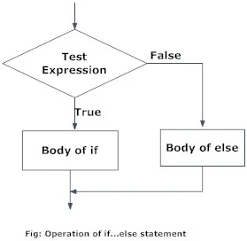
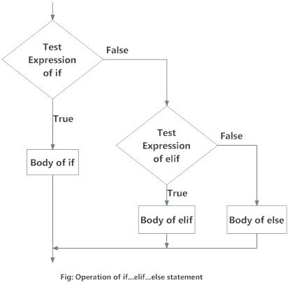

x is 17 Conditional Expressions
Decision making is required when we want to execute a code only if a certain condition is satisfied. The if…elif…else statement is used in Python for decision making. If-else conditional statement is used in when a situation leads to two conditions and one of them should hold true.
7.1 If else Statement Syntax
Here, the program evaluates the test expression and will execute statement(s) only if the test expression is True. If the test expression is False, the statement(s) is not executed.
In Python, the body of the if statement is indicated by the indentation. The body starts with an indentation and the first unindented line marks the end.
Remember: Python interprets non-zero values as True. None and 0 are interpreted as False.

7.2 Indentation
Python uses indentation for blocks, instead of curly braces. Both tabs and spaces are supported, but the standard indentation requires standard Python code to use four spaces. For example:
x is 1If statement, without indentation (will raise an error).
7.3 If elif and else Statement
x is less than zero
7.3.1 Example
Write a program to print ‘Yes’ when the number entered by the user is greater than or equal to 25.
YesWrite a program to check if a number entered by the user is positive or negative or zero and display an appropriate message.
Number is -vewe use if elif and else statement if one of the statement is true.
7.4 Nested if statements
We can have a if...elif...else statement inside another if...elif...else statement. This is called nesting in computer programming.
Any number of these statements can be nested inside one another. Indentation is the only way to figure out the level of nesting. They can get confusing, so they must be avoided unless necessary.
Example: Write a program to check if a number entered by the user is positive or negative or zero and display an appropriate message using nested if statement.
Number is +ve7.4.1 Note:
There can any number of elif statements.
last else will be executed if all elif conditions/statements fails.
7.5 Multiple If Conditions
7.5.1 Example
Write a program to print largest number among four numbers entered by the user.
The Largest Number is : 4 7.6 Exercise
Write a program to check whether a user entered number is odd or even?
Take two numbers from user and print larger.
Take three numbers from user, and print the largest.
Write a program to check whether a user entered number is odd or even,valid only for first 10 natural numbers.
write a program to get the difference b/w a given number and 17, if number is greater than 17, return double the absolute difference.
Write a program to calculate the sum of three given numbers, if values are equal then return thrice of their sum.
Write a prog. to get a new string from a given string where “Is” has been added to the front. if the given string already begins with “Is” then return the string.
If Question mark ‘?’ is missing in above string, then also include the ‘?’ at the end.
Write a program to find out whether a given post is talking about “SBP” or not.
- Write a program to find out whether a student is fail or pass? if it require total 40% and at-least 33% in each subject to pass. Assume 3 subjects, input from the user and marks are out of 100.
Write a program to detect a spam (OSICO Spam detector), a spam comment is defined as a text containing following keywords:
“make a lot of money”, “buy now”, “subscribe this”, “click this”. Write a program to detect these spams.
Write a program to calculate the grade of an officer from his numeric rating from the following scheme: greater than 4.5 implies A, greater than 3.5 implies B+, greater than 3 implies B and else C.
Write a program to find out the type of the variable Var1 = ——-. suppose 1+2j check whether it is int, float, str, bool, complex, tuple, dict, list, or unknown.
Write a Python program to sum of three given integers. However, if two values are equal sum will be zero.
Write a program to calculate the fare of a journey based on the following conditions, fare will be charged Rs. 15/km for first 100km, for next 200km it will be Rs.14/km, for next 200km it will be Rs.12/km and for distance above 500km, it will be charged Rs.11/km.
Write a routine to convert weight from Kg to pounds or pounds to kg.